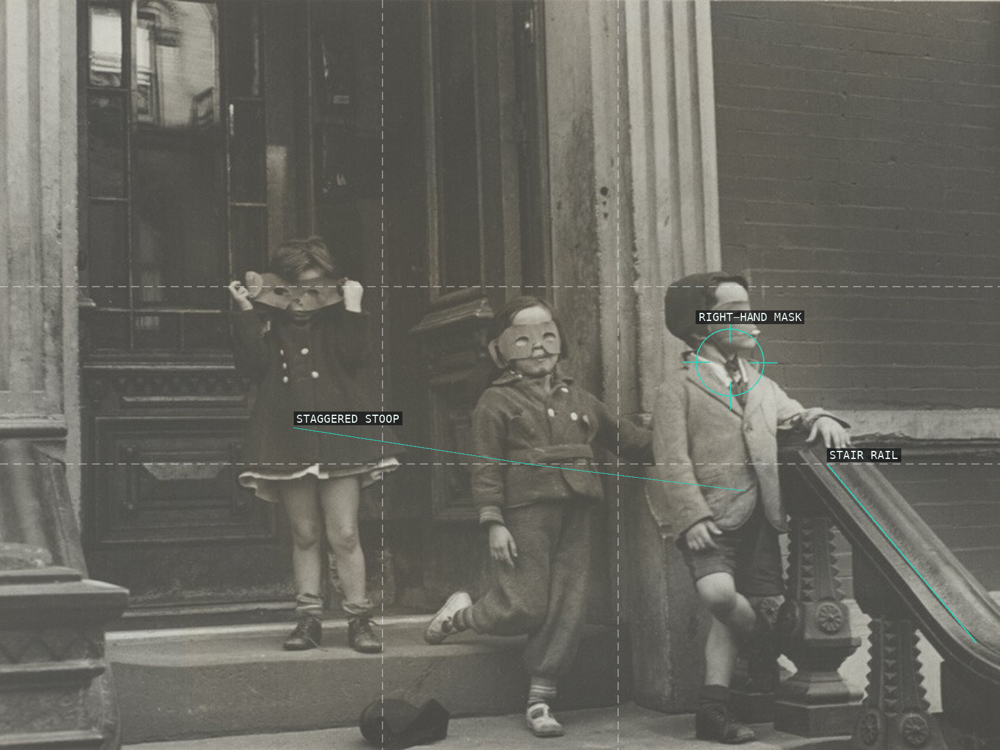
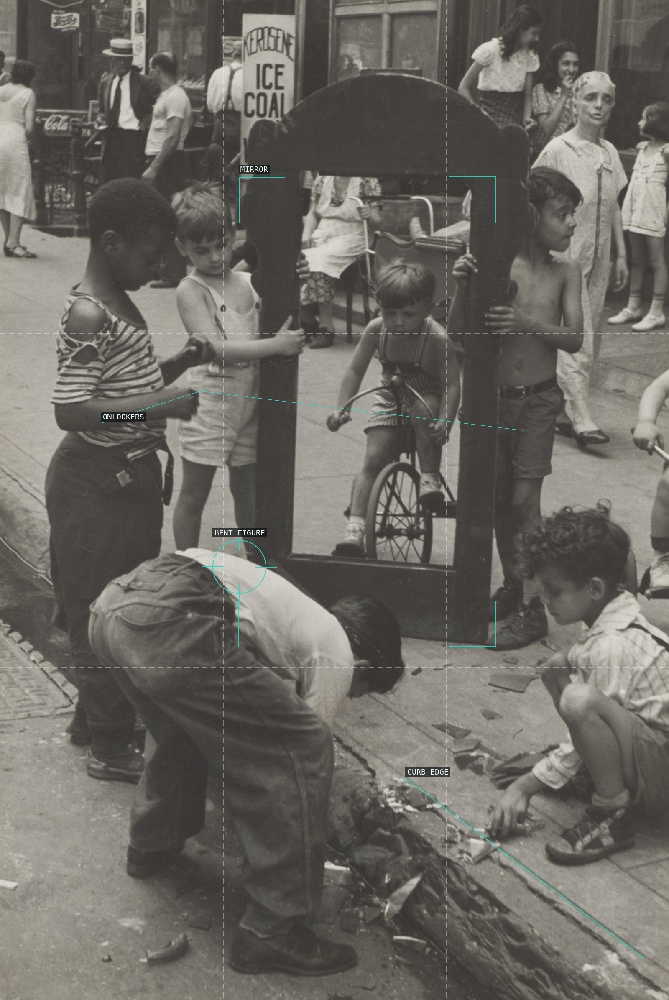
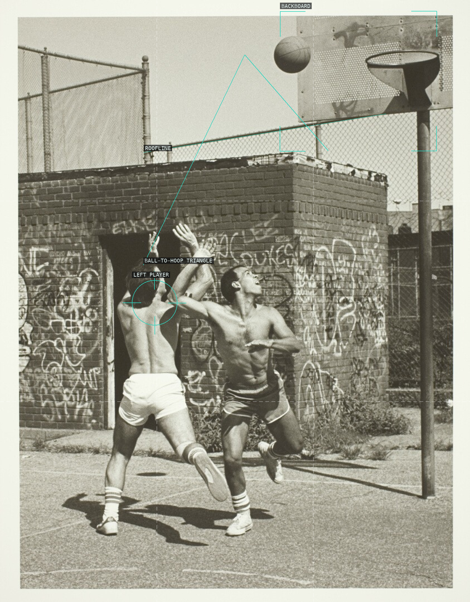
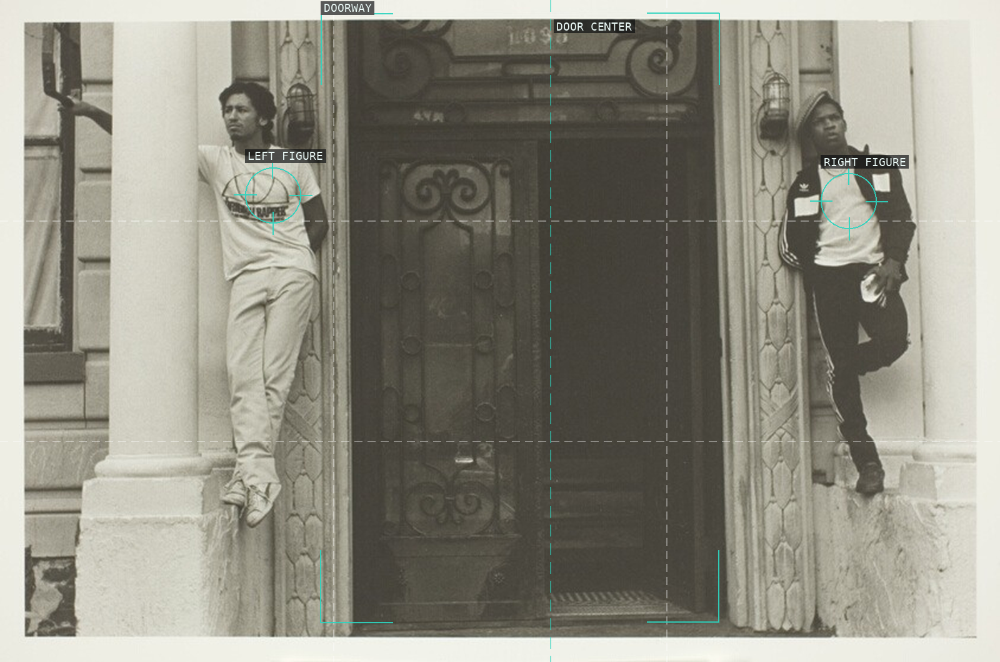
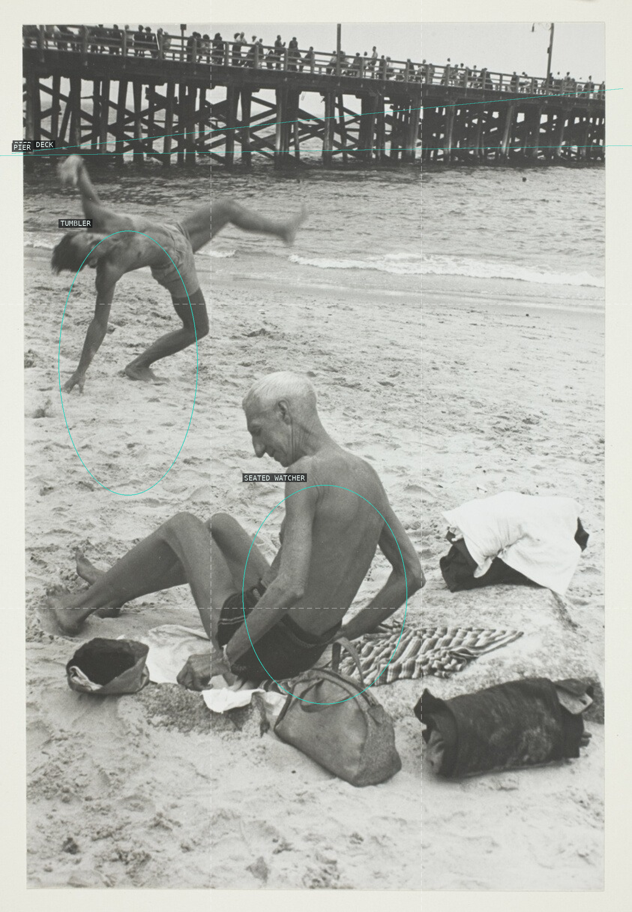
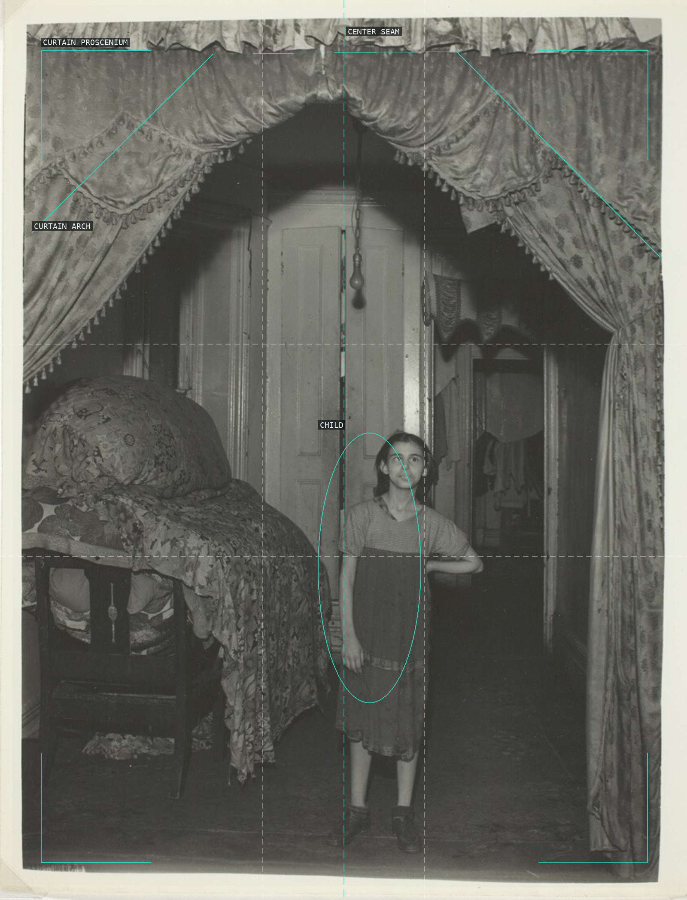
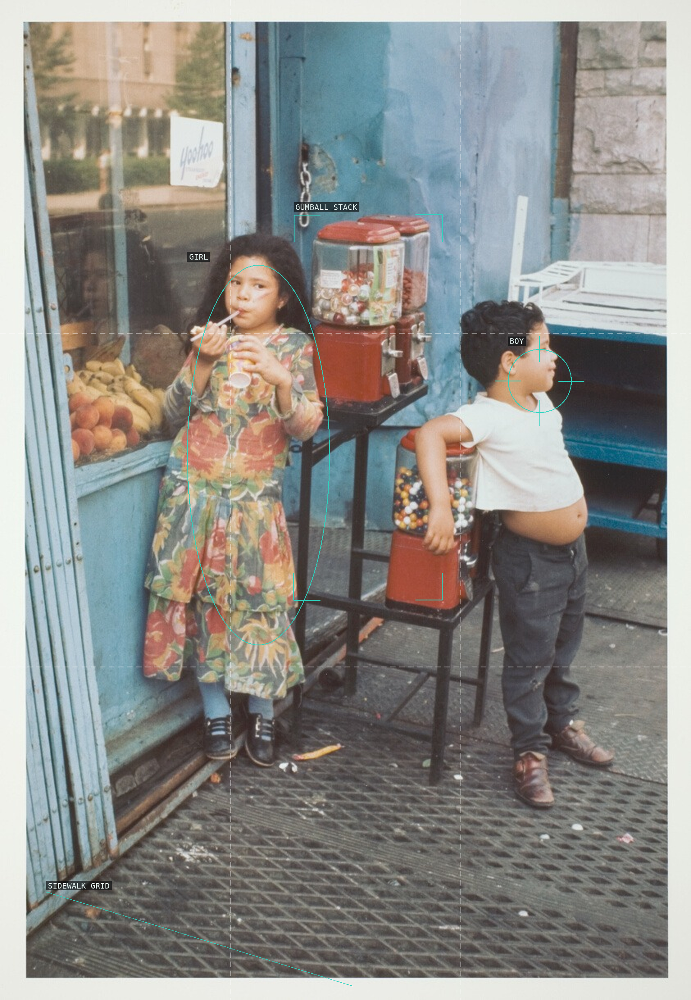
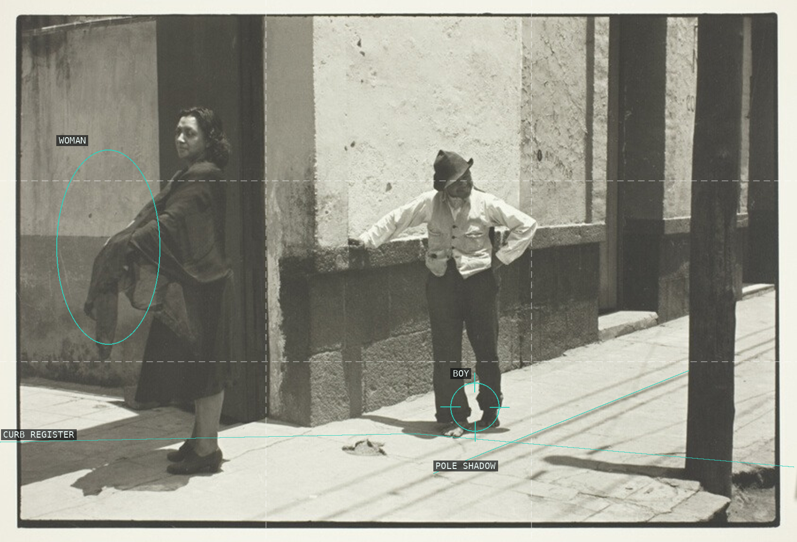
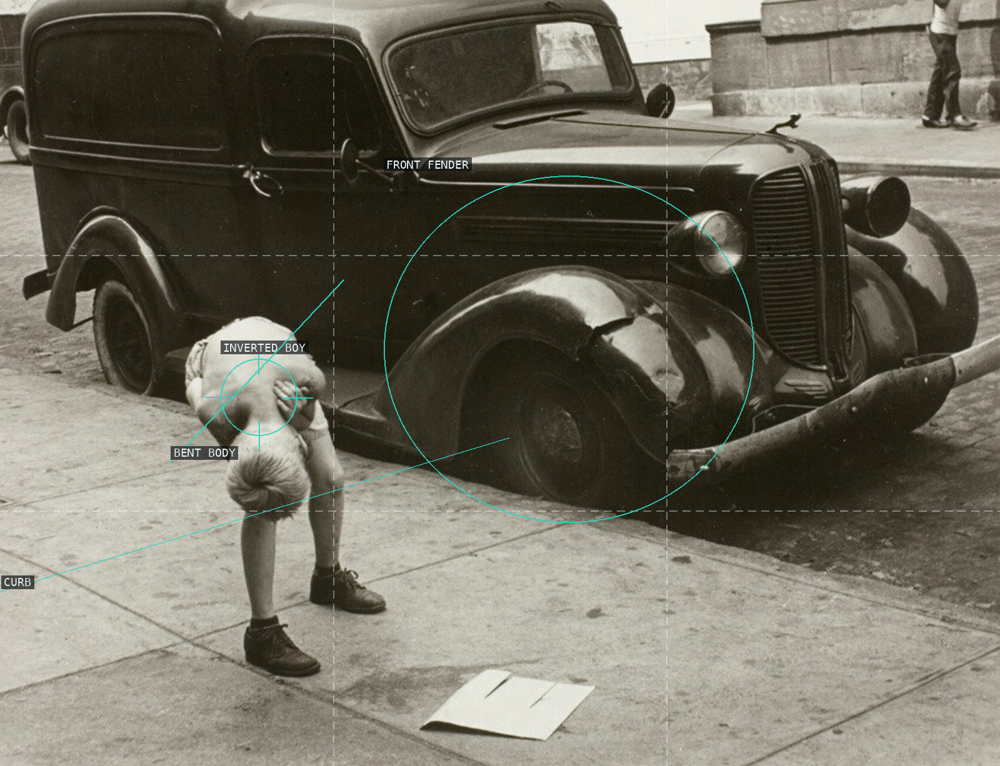
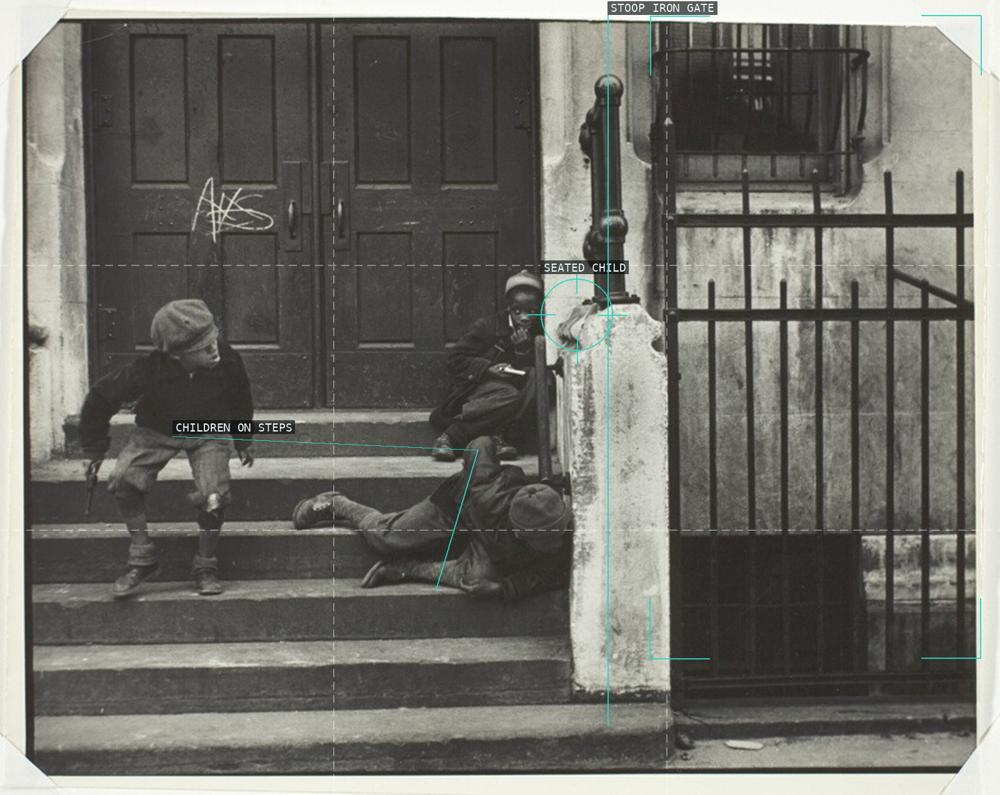

/* helen-levitt - proofs */
10 plates. Deterministic overlays rendered by the composition-analysis skill.

01-new-york-masked-children
Three masks and the descending rail turn the stoop into a shallow stage.

02-new-york-vertical
A freestanding mirror makes a second moving picture inside the sidewalk crowd.

03-brooklyn-1982
Ball, hands, and hoop hold a suspended action against the graffiti wall.

04-brooklyn-1985
A nearly bilateral doorway turns two unequal leaners into a held exchange.

05-coney-island
The high pier sets a fixed band above a tumbler and seated witness.

06-gypsy-new-york
Curtains make an improvised proscenium around a child and domestic depth.

07-new-york-1971
Bright children, red dispensers, and a blue storefront resolve into separate color blocks.

08-mexico-city
Two figures occupy distant ends of a wall and pavement cut by hard shadows.

09-little-boy-and-car
The inverted figure and fender compare two rounded, precarious masses.

10-new-york-1939
A post and gate divide three children into separate, connected levels of play.